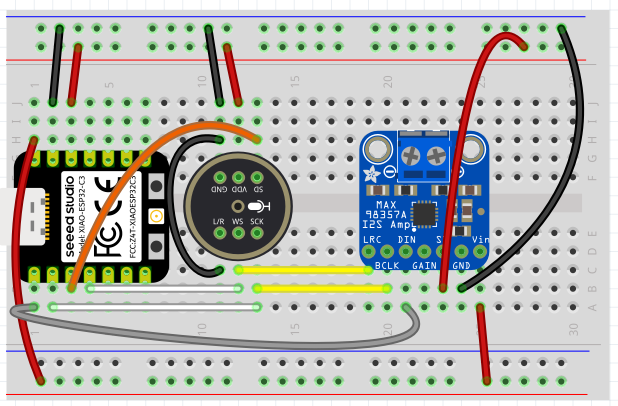

XIAO ESP32-C6 Eyes — Wiring C6
This board drives four hobby servos (left/right eye and left/right eyelid) as MCP-controlled tools, while keeping the normal XiaoZhi INMP441 microphone and MAX98357A speaker. The servos are driven by a PCA9685 I2C PWM board, so they cost only two pins (SDA/SCL) and take their power from a separate 5 V supply — leaving the I2S audio pins free.
PCA9685 did not respond; servo control disabled and the voice assistant
still works. Wire the servo board once audio is confirmed.
XIAO ESP32-C6 pinout reference
All pad-to-GPIO numbers below come from the official Seeed Studio pinout. Keep it open while wiring — the XIAO C6 pad-to-GPIO mapping differs from the C3.


Base breadboard layout
This is the shared XiaoZhi breadboard layout (XIAO + INMP441 mic + MAX98357A amp). The eyes board keeps this audio wiring exactly and adds the PCA9685 servo board on the I2C pads (D4/D5).

Wiring — audio + servo bus
Audio — I2S (unchanged)
| XIAO pad | GPIO | Connect to |
|---|---|---|
| D0 | GPIO0 | MAX98357A DIN (speaker data) |
| D1 | GPIO1 | BCLK (bit clock, both) |
| D2 | GPIO2 | WS / LRC (word select, both) |
| D3 | GPIO21 | INMP441 SD (mic data) |
| 5V | — | MAX98357A VIN (must be 5 V) |
| 3V3 | — | INMP441 VDD |
| GND | — | GND (both), INMP441 L/R |
Servo bus — I2C to PCA9685
| XIAO pad | GPIO | PCA9685 |
|---|---|---|
| D4 | GPIO22 | SDA |
| D5 | GPIO23 | SCL |
| 3V3 | — | VCC (logic only) |
| GND | — | GND (common ground) |
Default I2C address 0x40. Servo V+ comes from a separate 5 V
supply — see Power below.
Servo channel map
Plug each servo into the matching PCA9685 channel header (signal / V+ / GND per channel):
| PCA9685 channel | Servo | MCP control |
|---|---|---|
| 0 | Left eye | self.eyes.set_position (left) |
| 1 | Right eye | self.eyes.set_position (right) |
| 2 | Left eyelid | self.eyelids.set_position (left) |
| 3 | Right eyelid | self.eyelids.set_position (right) |
Other tools: self.eyes.center, self.eyes.get_position,
self.eyelids.open, self.eyelids.close, and
self.eyes.set_trim (persists a per-servo calibration offset in NVS).
Angles are accepted 0–180°; tighten the safe range after measuring the linkage.
Powering the servos
- External 5 V + → PCA9685 V+
- External GND → PCA9685 GND
- Common ground: tie the 5 V supply GND, PCA9685 GND, and XIAO GND together.
- Add 470–1000 µF bulk capacitance across V+/GND (a 0.1 µF ceramic in parallel helps too).
- Bring up one servo at a time, mechanically disconnected from the eye linkage, and confirm movement over MCP before connecting the rest.
Flash this board
Connect the XIAO ESP32-C6 over USB-C, then flash the eyes firmware: